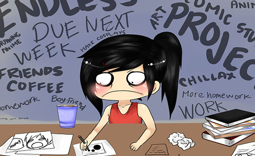

TO ANOTHER WEIRD ENDING?
posted by: Ishita Shreshtha

College is a tough place, to be honest. We come here thinking we’re gonna have the time of our lives and maybe we do. But we also face lots of unexpected tough calls from life.
The first year of college, however unpredictable it seemed to be, was actually a bed of roses to walk on. Semester 3 has been a rollercoaster journey so far and I have taken a huge deal of lessons to pack in my suitcase as I return home.
The beginning was rosy, adventurous and full of serotonin secretions. I am glad I had my fair share of adventures thanks to the people close to me. However, I saw the most practical and real world this semester. From goons to dicks, from liars to pricks, I think I got to see them all.
But I don’t intend to describe every single moment of these 6 months because honestly, I don’t remember them myself. And I do not in any way wish to loathe myself in the past memories. So here I go with the lessons that I ‘ve learnt:
1. No one can be trusted.
This is no emo quote I want to paste and show myself as the person who’s got her trust broken by random people this whole time. No. This is just the plain, bitter truth. From JD I learnt that most of them out there have ulterior motives. Not everything is plainly just what they seem on the surface level. Consciously, or subconsciously, we’re all playing games. A game of survival, a game of showcasing themselves as the best people to associate with. Sometimes the game has no evil intentions but the ones that do, are a hell of a ride to get over with! So yes, people can’t be trusted and now my brain has wired itself to think in multiple perspectives for a single and otherwise very pure situations.
2. Promises don’t exist.
You think that the people whom you call best friends are the most loyal bunch, but they aren’t. They’re shit. People talk. People talk the whole fucking time. Your most trusted friend has talked about your secret to his/her most trusted friend who has talked about it to his most trusted friend and the cycle goes unless it’s a campus buzz. Oh, and how can I forget how some of them who simply spill the beans because they were too anxious to keep it within themselves. So, if you’re expecting that your friend or partner will be hanging out with you or keep stuff to themselves because they promised you to, then honey, just break that glass of expectations.
3. People are manipulative.
Oh yes. People are manipulative bastards. You will never know, or maybe, sometimes you do, that the only reason the most feared guy of the college is talking to you is because he wants you to be a part of his little game. You’ll think that he likes you, but all he really wants is to avail your intelligence, or your foolishness to his advantage. There might not be many like him, however, there definitely are those who control your actions through sweet talk. So, beware.
4. You have to trust your gut.
The one most important survival factor in college has to be this. You do not have to do what the others are doing, just to be cool. Do it, if you are really eager to learn something out of it. Else, follow your instincts. Let them take you to unvisited places. Explore yourself. Squeeze out every single drop of sweat from your body and master yourself in a particular niche. You do not have to be present everywhere. If you feel red flags while talking to a person, learn how to distance yourself without making them feel bad about it. If you wish to know a person better, do not listen to what others have to tell about him/her. Go talk and judge for yourself. You’ll learn a lot in this way.
5. Things never go as planned.
Whether it is your solo trip in the city, or a group hangout at KFC or be it a secret night out with your hush-hush lover, none of them are executed like you visualize it in your mind. Sometimes, they do not happen at all. You may be busy with assignments, your group may no longer exist and your hush-hush secret lover may be afraid to get caught. You may be stuck with club activities and the semester may get too tough to score good marks and yet again, your goal to get a higher GPA will fail. So, do plan what you want to do in a new semester but do not be so engrossed in it that if it doesn’t execute successfully, it gets difficult for you to accept the reality.
There are way too many lessons one learns in a span of 6 months. I can tell you more about it, but ultimately, it’s your journey and you will have to learn some lessons practically yourself.
Meet The Author

Ishita Shreshtha
Writer, Blogger
Contact: